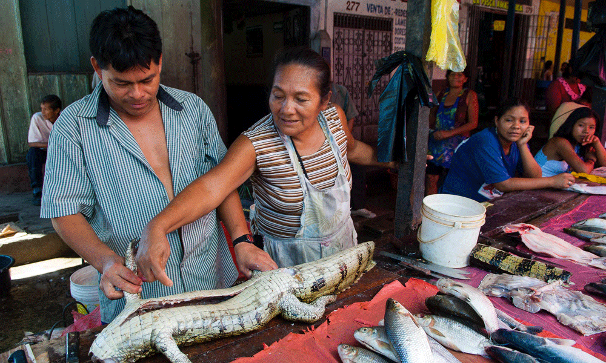
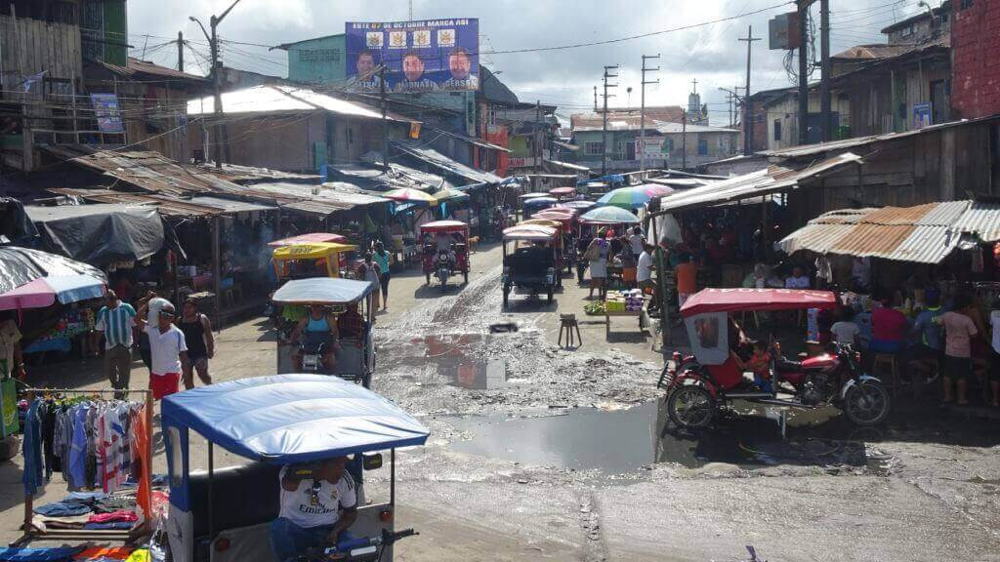
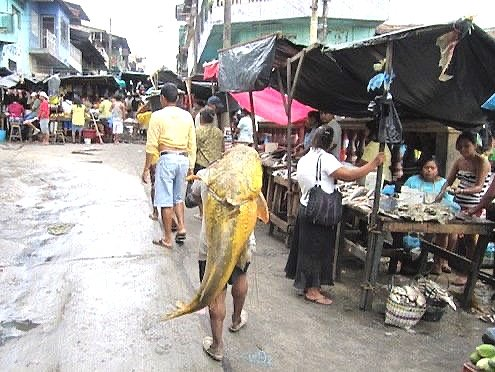

Mercado de Belén: El corazón comercial de Iquitos
El Mercado de Belén es uno de los lugares más vibrantes y pintorescos de Iquitos. Conocido por su diversidad de productos amazónicos, es un destino imperdible para quienes buscan sumergirse en la cultura local, probar alimentos exóticos y explorar la vida cotidiana de la ciudad.
Historia
Ubicado en el barrio de Belén, este mercado ha sido un punto central de comercio durante décadas. Es famoso por sus calles flotantes en la temporada de lluvias y su amplia oferta de productos naturales, desde frutas tropicales hasta medicinas tradicionales de la selva.



Horarios y Ubicación
- Ubicación: Mercado de Belén, Iquitos, región de Loreto, Perú.
- Horarios de visita: Abierto desde las 5:00 a.m. hasta las 6:00 p.m.
- Costo de entrada: Entrada gratuita.
Consejos para Visitantes
- Explora con guía local: El mercado es grande y puede ser caótico, un guía puede ayudarte a conocer mejor sus rincones.
- Prueba la gastronomía: No te pierdas los jugos naturales, el suri (gusano amazónico) y los platos tradicionales de la selva.
- Visita temprano: La mejor hora para recorrer el mercado es por la mañana, cuando hay mayor actividad y frescura en los productos.
- Cuida tus pertenencias: Como en cualquier mercado concurrido, es recomendable estar atento a tus objetos personales.
- Sumérgete en la cultura: Habla con los vendedores, aprende sobre los productos locales y disfruta de la autenticidad del lugar.